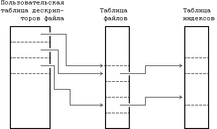
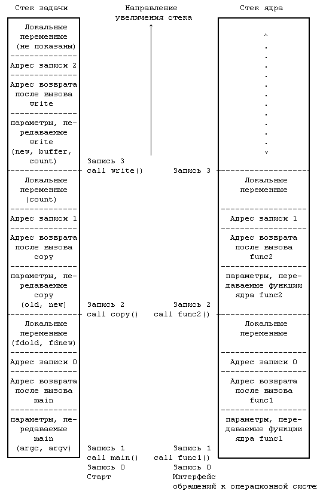
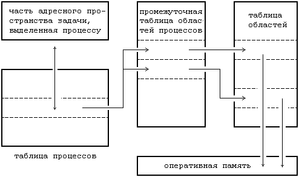
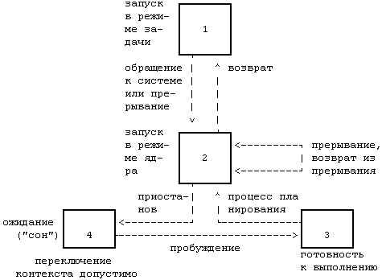
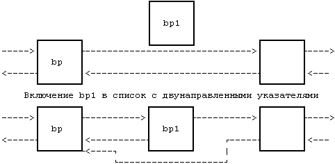

В это разделе дается обзор некоторых основных информационных структур, используемых ядром системы, и более подробно описывается функционирование модулей ядра, показанных на Рисунке 2.1.
Внутреннее представление файла описывается в индексе, который содержит описание размещения информации файла на диске и другую информацию, такую как владелец файла, права доступа к файлу и время доступа. Термин "индекс" (inode) широко используется в литературе по системе UNIX. Каждый файл имеет один индекс, но может быть связан с несколькими именами, которые все отражаются в индексе. Каждое имя является указателем. Когда процесс обращается к файлу по имени, ядро системы анализирует по очереди каждую компоненту имени файла, проверяя права процесса на просмотр входящих в путь поиска каталогов, и в конце концов возвращает индекс файла. Например, если процесс обращается к системе:
open("/fs2/mjb/rje/sourcefile", 1);
ядро системы возвращает индекс для файла "/fs2/mjb/rje/sourcefile". Если процесс создает новый файл, ядро присваивает этому файлу неиспользуемый индекс. Индексы хранятся в файловой системе (и это мы еще увидим), однако при обработке файлов ядро заносит их в таблицу индексов в оперативной памяти.
Ядро поддерживает еще две информационные структуры, таблицу файлов и пользовательскую таблицу дескрипторов файла. Таблица файлов выступает глобальной структурой ядра, а пользовательская таблица дескрипторов файла выделяется под процесс. Если процесс открывает или создает файл, ядро выделяет в каждой таблице элемент, корреспондирующий с индексом файла. Элементы в этих трех структурах - в пользовательской таблице дескрипторов файла, в таблице файлов и в таблице индексов - хранят информацию о состоянии файла и о доступе пользователей к нему. В таблице файлов хранится смещение в байтах от начала файла до того места, откуда начнет выполняться следующая команда пользователя read или write, а также информация о правах доступа к открываемому процессу. Таблица дескрипторов файла идентифицирует все открытые для процесса файлы. На Рисунке 2.2 показаны эти таблицы и связи между ними. В системных операциях open (открыть) и creat (создать) ядро возвращает дескриптор файла, которому соответствует указатель в таблице дескрипторов файла. При выполнении операций read (читать) и write (писать) ядро использует дескриптор файла для входа в таблицу дескрипторов и, следуя указателям на таблицу файлов и на таблицу индексов, находит информацию в файле. Более подробно эти информационные структуры рассматриваются в главах 4 и 5. Сейчас достаточно сказать, что использование этих таблиц обеспечивает различную степень разделения доступа к файлу.

Рисунок 2.2. Таблицы файлов, дескрипторов файла и индексов
Обычные файлы и каталоги хранятся в системе UNIX на устройствах ввода-вывода блоками, таких как магнитные ленты или диски. Поскольку существует некоторое различие во времени доступа к этим устройствам, при установке системы UNIX на лентах размещают файловые системы. С годами бездисковые автоматизированные рабочие места станут общим случаем, и файлы будут располагаться в удаленной системе, доступ к которой будет осуществляться через сеть (см. главу 13). Для простоты, тем не менее, в последующем тексте подразумевается использование дисков. В системе может быть несколько физических дисков, на каждом из которых может размещаться одна и более файловых систем. Разбивка диска на несколько файловых систем облегчает администратору управление хранимыми данными. На логическом уровне ядро имеет дело с файловыми системами, а не с дисками, при этом каждая система трактуется как логическое устройство, идентифицируемое номером. Преобразование адресов логического устройства (файловой системы) в адреса физического устройства (диска) и обратно выполняется дисковым драйвером. Термин "устройство" в этой книге используется для обозначения логического устройства, кроме специально оговоренных случаев.
Файловая система состоит из последовательности логических блоков длиной 512, 1024, 2048 или другого числа байт, кратного 512, в зависимости от реализации системы. Размер логического блока внутри одной файловой системы постоянен, но может варьироваться в разных файловых системах в данной конфигурации. Использование логических блоков большого размера увеличивает скорость передачи данных между диском и памятью, поскольку ядро сможет передать больше информации за одну дисковую операцию, и сокращает количество продолжительных операций. Например, чтение 1 Кбайта с диска за одну операцию осуществляется быстрее, чем чтение 512 байт за две. Однако, если размер логического блока слишком велик, полезный объем памяти может уменьшиться, это будет показано в главе 5. Для простоты термин "блок" в этой книге будет использоваться для обозначения логического блока, при этом подразумевается логический блок размером 1 Кбайт, кроме специально оговоренных случаев.
Рисунок 2.3. Формат файловой системы
Файловая система имеет следующую структуру (Рисунок 2.3).
- Блок загрузки располагается в начале пространства, отведенного под файловую систему, обычно в первом секторе, и содержит программу начальной загрузки, которая считывается в машину при загрузке или инициализации операционной системы. Хотя для запуска системы требуется только один блок загрузки, каждая файловая система имеет свой (пусть даже пустой) блок загрузки.
- Суперблок описывает состояние файловой системы - какого она размера, сколько файлов может в ней храниться, где располагается свободное пространство, доступное для файловой системы, и другая информация.
- Список индексов в файловой системе располагается вслед за суперблоком. Администраторы указывают размер списка индексов при генерации файловой системы. Ядро операционной системы обращается к индексам, используя указатели в списке индексов. Один из индексов является корневым индексом файловой системы: это индекс, по которому осуществляется доступ к структуре каталогов файловой системы после выполнения системной операции mount (монтировать) (раздел 5.14).
- Информационные блоки располагаются сразу после списка индексов и содержат данные файлов и управляющие данные. Отдельно взятый информационный блок может принадлежать одному и только одному файлу в файловой системе.
В этом разделе мы рассмотрим более подробно подсистему управления процессами. Даются разъяснения по поводу структуры процесса и некоторых информационных структур, используемых при распределении памяти под процессы. Затем дается предварительный обзор диаграммы состояния процессов и затрагиваются различные вопросы, связанные с переходами из одного состояния в другое.
Процессом называется последовательность операций при выполнении программы, которые представляют собой наборы байтов, интерпретируемые центральным процессором как машинные инструкции (т.н. "текст"), данные и стековые структуры. Создается впечатление, что одновременно выполняется множество процессов, поскольку их выполнение планируется ядром, и, кроме того, несколько процессов могут быть экземплярами одной программы. Выполнение процесса заключается в точном следовании набору инструкций, который является замкнутым и не передает управление набору инструкций другого процесса; он считывает и записывает информацию в раздел данных и в стек, но ему недоступны данные и стеки других процессов. Одни процессы взаимодействуют с другими процессами и с остальным миром посредством обращений к операционной системе.
С практической точки зрения процесс в системе UNIX является объектом, создаваемым в результате выполнения системной операции fork. Каждый процесс, за исключением нулевого, порождается в результате запуска другим процессом операции fork. Процесс, запустивший операцию fork, называется родительским, а вновь созданный процесс - порожденным. Каждый процесс имеет одного родителя, но может породить много процессов. Ядро системы идентифицирует каждый процесс по его номеру, который называется идентификатором процесса (PID). Нулевой процесс является особенным процессом, который создается "вручную" в результате загрузки системы; после порождения нового процесса (процесс 1) нулевой процесс становится процессом подкачки. Процесс 1, известный под именем init, является предком любого другого процесса в системе и связан с каждым процессом особым образом, описываемым в главе 7.
Пользователь, транслируя исходный текст программы, создает исполняемый файл, который состоит из нескольких частей:
- набора "заголовков", описывающих атрибуты файла,
- текста программы,
- представления на машинном языке данных, имеющих начальные значения при запуске программы на выполнение, и указания на то, сколько пространства памяти ядро системы выделит под неинициализированные данные, так называемые bss (*) (ядро устанавливает их в 0 в момент запуска),
- других секций, таких как информация символических таблиц.
Для программы, приведенной на Рисунке 1.3, текст исполняемого файла представляет собой сгенерированный код для функций main и copy, к определенным данным относится переменная version (вставленная в программу для того, чтобы в последней имелись некоторые определенные данные), а к неопределенным - массив buffer. Компилятор с языка Си для системы версии V создает отдельно текстовую секцию по умолчанию, но не исключается возможность включения инструкций программы и в секцию данных, как в предыдущих версиях системы.
Ядро загружает исполняемый файл в память при выполнении системной операции exec, при этом загруженный процесс состоит по меньшей мере из трех частей, так называемых областей: текста, данных и стека. Области текста и данных корреспондируют с секциями текста и bss-данных исполняемого файла, а область стека создается автоматически и ее размер динамически устанавливается ядром системы во время выполнения. Стек состоит из логических записей активации, помещаемых в стек при вызове функции и выталкиваемых из стека при возврате управления в вызвавшую процедуру; специальный регистр, именуемый указателем вершины стека, показывает текущую глубину стека. Запись активации включает параметры передаваемые функции, ее локальные переменные, а также данные, необходимые для восстановления предыдущей записи активации, в том числе значения счетчика команд и указателя вершины стека в момент вызова функции. Текст программы включает последовательности команд, управляющие увеличением стека, а ядро системы выделяет, если нужно, место под стек. В программе на Рисунке 1.3 параметры argc и argv, а также переменные fdold и fdnew, содержащиеся в вызове функции main, помещаются в стек, как только встретилось обращение к функции main (один раз в каждой программе, по условию), так же и параметры old и new и переменная count, содержащиеся в вызове функции copy, помещаются в стек в момент обращения к указанной функции.

Рисунок 2.4. Стеки задачи и ядра для программы копирования.
Поскольку процесс в системе UNIX может выполняться в двух режимах, режиме ядра или режиме задачи, он пользуется в каждом из этих режимов отдельным стеком. Стек задачи содержит аргументы, локальные переменные и другую информацию относительно функций, выполняемых в режиме задачи. Слева на Рисунке 2.4 показан стек задачи для процесса, связанного с выполнением системной операции write в программе copy. Процедура запуска процесса (включенная в библиотеку) обратилась к функции main с передачей ей двух параметров, поместив в стек задачи запись 1; в записи 1 есть место для двух локальных переменных функции main. Функция main затем вызывает функцию copy с передачей ей двух параметров, old и new, и помещает в стек задачи запись 2; в записи 2 есть место для локальной переменной count. Наконец, процесс активизирует системную операцию write, вызвав библиотечную функцию с тем же именем. Каждой системной операции соответствует точка входа в библиотеке системных операций; библиотека системных операций написана на языке ассемблера и включает специальные команды прерывания, которые, выполняясь, порождают "прерывание", вызывающее переключение аппаратуры в режим ядра. Процесс ищет в библиотеке точку входа, соответствующую отдельной системной операции, подобно тому, как он вызывает любую из функций, создавая при этом для библиотечной функции запись активации. Когда процесс выполняет специальную инструкцию, он переключается в режим ядра, выполняет операции ядра и использует стек ядра.
Стек ядра содержит записи активации для функций, выполняющихся в режиме ядра. Элементы функций и данных в стеке ядра соответствуют функциям и данным, относящимся к ядру, но не к программе пользователя, тем не менее, конструкция стека ядра подобна конструкции стека задачи. Стек ядра для процесса пуст, если процесс выполняется в режиме задачи. Справа на Рисунке 2.4 представлен стек ядра для процесса выполнения системной операции write в программе copy. Подробно алгоритмы выполнения системной операции write будут описаны в последующих разделах.

Рисунок 2.5. Информационные структуры для процессов
Каждому процессу соответствует точка входа в таблице процессов ядра, кроме того, каждому процессу выделяется часть оперативной памяти, отведенная под задачу пользователя. Таблица процессов включает в себя указатели на промежуточную таблицу областей процессов, точки входа в которую служат в качестве указателей на собственно таблицу областей. Областью называется непрерывная зона адресного пространства, выделяемая процессу для размещения текста, данных и стека. Точки входа в таблицу областей описывают атрибуты области, как например, хранятся ли в области текст программы или данные, закрытая ли эта область или же совместно используемая, и где конкретно в памяти размещается содержимое области. Внешний уровень косвенной адресации (через промежуточную таблицу областей, используемых процессами, к собственно таблице областей) позволяет независимым процессам совместно использовать области. Когда процесс запускает системную операцию exec, ядро системы выделяет области под ее текст, данные и стек, освобождая старые области, которые использовались процессом. Если процесс запускает операцию fork, ядро удваивает размер адресного пространства старого процесса, позволяя процессам совместно использовать области, когда это возможно, и, с другой стороны, производя физическое копирование. Если процесс запускает операцию exit, ядро освобождает области, которые использовались процессом. На Рисунке 2.5 изображены информационные структуры, связанные с запуском процесса. Таблица процессов ссылается на промежуточную таблицу областей, используемых процессом, в которой содержатся указатели на записи в собственно таблице областей, соответствующие областям для текста, данных и стека процесса.
Запись в таблице процессов и часть адресного пространства задачи, выделенная процессу, содержат управляющую информацию и данные о состоянии процесса. Это адресное пространство является расширением соответствующей записи в таблице процессов, различия между данными объектами будут рассмотрены в главе 6. В качестве полей в таблице процессов, которые рассматриваются в последующих разделах, выступают:
- поле состояния,
- идентификаторы, которые характеризуют пользователя, являющегося владельцем процесса (код пользователя или UID),
- значение дескриптора события, когда процесс приостановлен (находится в состоянии "сна").
Адресное пространство задачи, выделенное процессу, содержит описывающую процесс информацию, доступ к которой должен обеспечиваться только во время выполнения процесса. Важными полями являются:
- указатель на позицию в таблице процессов, соответствующую текущему процессу,
- параметры текущей системной операции, возвращаемые значения и коды ошибок,
- дескрипторы файла для всех открытых файлов,
- внутренние параметры ввода-вывода,
- текущий каталог и текущий корень (см. главу 5),
- границы файлов и процесса.
Ядро системы имеет непосредственный доступ к полям адресного пространства задачи, выделенного выполняемому процессу, но не имеет доступ к соответствующим полям других процессов. С точки зрения внутреннего алгоритма, при обращении к адресному пространству задачи, выделенному выполняемому процессу, ядро ссылается на структурную переменную u, и, когда запускается на выполнение другой процесс, ядро перенастраивает виртуальные адреса таким образом, чтобы структурная переменная u указывала бы на адресное пространство задачи для нового процесса. В системной реализации предусмотрено облегчение идентификации текущего процесса благодаря наличию указателя на соответствующую запись в таблице процессов из адресного пространства задачи.
2.2.2.1 Контекст процесса
Контекстом процесса является его состояние, определяемое текстом, значениями глобальных переменных пользователя и информационными структурами, значениями используемых машинных регистров, значениями, хранимыми в позиции таблицы процессов и в адресном пространстве задачи, а также содержимым стеков задачи и ядра, относящихся к данному процессу. Текст операций системы и ее глобальные информационные структуры совместно используются всеми процессами, но не являются составной частью контекста процесса.
Говорят, что при запуске процесса система исполняется в контексте процесса. Когда ядро системы решает запустить другой процесс, оно выполняет переключение контекста с тем, чтобы система исполнялась в контексте другого процесса. Ядро осуществляет переключение контекста только при определенных условиях, что мы увидим в дальнейшем. Выполняя переключение контекста, ядро сохраняет информацию, достаточную для того, чтобы позднее переключиться вновь на первый процесс и возобновить его выполнение. Аналогичным образом, при переходе из режима задачи в режим ядра, ядро системы сохраняет информацию, достаточную для того, чтобы позднее вернуться в режим задачи и продолжить выполнение с прерванного места. Однако, переход из режима задачи в режим ядра является сменой режима, но не переключением контекста. Если обратиться еще раз к Рисунку 1.5, можно сказать, что ядро выполняет переключение контекста, когда меняет контекст процесса A на контекст процесса B; оно меняет режим выполнения с режима задачи на режим ядра и наоборот, оставаясь в контексте одного процесса, например, процесса A.
Ядро обрабатывает прерывания в контексте прерванного процесса, пусть даже оно и не вызывало никакого прерывания. Прерванный процесс мог при этом выполняться как в режиме задачи, так и в режиме ядра. Ядро сохраняет информацию, достаточную для того, чтобы можно было позже возобновить выполнение прерванного процесса, и обрабатывает прерывание в режиме ядра. Ядро не порождает и не планирует порождение какого-то особого процесса по обработке прерываний.
2.2.2.2 Состояния процесса
Время жизни процесса можно разделить на несколько состояний, каждое из которых имеет определенные характеристики, описывающие процесс. Все состояния процесса рассматриваются в главе 6, однако представляется существенным для понимания перечислить некоторые из состояний уже сейчас:
- Процесс выполняется в режиме задачи.
- Процесс выполняется в режиме ядра.
- Процесс не выполняется, но готов к выполнению и ждет, когда планировщик выберет его. В этом состоянии может находиться много процессов, и алгоритм планирования устанавливает, какой из процессов будет выполняться следующим.
- Процесс приостановлен ("спит"). Процесс "впадает в сон", когда он не может больше продолжать выполнение, например, когда ждет завершения ввода-вывода.
Поскольку процессор в каждый момент времени выполняет только один процесс, в состояниях 1 и 2 может находиться самое большее один процесс. Эти два состояния соответствуют двум режимам выполнения, режиму задачи и режиму ядра.
2.2.2.3 Переходы из состояния в состояние
Состояния процесса, перечисленные выше, дают статическое представление о процессе, однако процессы непрерывно переходят из состояния в состояние в соответствии с определенными правилами. Диаграмма переходов представляет собой ориентированный граф, вершины которого представляют собой состояния, в которые может перейти процесс, а дуги - события, являющиеся причинами перехода процесса из одного состояния в другое. Переход между двумя состояниями разрешен, если существует дуга из первого состояния во второе. Несколько дуг может выходить из одного состояния, однако процесс переходит только по одной из них в зависимости от того, какое событие произошло в системе. На Рисунке 2.6 представлена диаграмма переходов для состояний, перечисленных выше.
Как уже говорилось выше, в режиме разделения времени может выполняться одновременно несколько процессов, и все они могут одновременно работать в режиме ядра. Если им разрешить свободно выполняться в режиме ядра, то они могут испортить глобальные информационные структуры, принадлежащие ядру. Запрещая произвольное переключение контекстов и управляя возникновением событий, ядро защищает свою целостность.
Ядро разрешает переключение контекста только тогда, когда процесс переходит из состояния "запуск в режиме ядра" в состояние "сна в памяти". Процессы, запущенные в режиме ядра, не могут быть выгружены другими процессами; поэтому иногда говорят, что ядро не выгружаемо, при этом процессы, находящиеся в режиме задачи, могут выгружаться системой. Ядро поддерживает целостность своих информационных структур, поскольку оно не выгружаемо, таким образом решая проблему "взаимного исключения" - обеспечения того, что критические секции программы выполняются в каждый момент времени в рамках самое большее одного процесса.
В качестве примера рассмотрим программу (Рисунок 2.7) включения информационной структуры, чей адрес содержится в указателе bp1, в список с использованием указателей после структуры, чей адрес содержится в bp. Если система разрешила переключение контекста при выполнении ядром фрагмента программы, возможно возникновение следующей ситуации. Предположим, ядро выполняет программу до комментариев и затем осуществляет переключение контекста. Список с использованием сдвоенных указателей имеет противоречивый вид: структура bp1 только наполовину входит в этот список. Если процесс следует за передними указателями, он обнаружит bp1 в данном списке, но если он последует за фоновыми указателями, то вообще не найдет структуру bp1 (Рисунок 2.8). Если другие процессы будут обрабатывать указатели в списке до момента повторного запуска первого процесса, структура списка может постоянно разрушаться. Система UNIX предупреждает возникновение подобных ситуаций, запрещая переключение контекстов на время выполнения процесса в режиме ядра. Если процесс переходит в состояние "сна", делая допустимым переключение контекста, алгоритмы ядра обеспечивают защиту целостности информационных структур системы.

Рисунок 2.6. Состояния процесса и переходы между ними
Проблемой, которая может привести к нарушению целостности информации ядра, является обработка прерываний, могущая вносить изменения в информацию о состоянии ядра. Например, если ядро выполняло программу, приведенную на Рисунке 2.7, и получило прерывание по достижении комментариев, программа обработки прерываний может разрушить ссылки, если будет манипулировать указателями, как было показано ранее. Чтобы решить эту проблему, система могла бы запретить все прерывания на время работы в режиме ядра, но при этом затянулась бы обработка прерывания, что в конечном счете нанесло бы ущерб производительности системы. Вместо этого ядро повышает приоритет прерывания процессора, запрещая прерывания на время выполнения критических секций программы. Секция программы является критической, если в процессе ее выполнения запуск программ обработки произвольного прерывания может привести к возникновению проблем, имеющих отношение к нарушению целостности. Например, если программа обработки прерывания от диска работает с буферными очередями, то часть прерываемой программы, при выполнении которой ядро обрабатывает буферные очереди, является критической секцией по отношению к программе обработки прерывания от диска. Критические секции невелики по размеру и встречаются нечасто, поэтому их существование не оказывает практически никакого воздействия на производительность системы. В других операционных системах данный вопрос решается путем запрещения любых прерываний при работе в системных режимах или путем разработки схем блокировки, обеспечивающих целостность. В главе 12 мы еще вернемся к этому вопросу, когда будем говорить о многопроцессорных системах, где применения указанных мер для решения проблемы недостаточно.
struct queue {
} *bp, *bp1;
bp1 - > forp = bp - > forp;
bp1 - > backp = bp;
bp - > forp = bp1;
/* здесь рассмотрите возможность переключения контекста */
bp1 - > forp - > backp = bp1;
|
Рисунок 2.7. Пример программы, создающей список с двунаправленными указателями

Рисунок 2.8. Список с указателями, некорректный из-за переключения контекста
Чтобы подвести черту, еще раз скажем, что ядро защищает свою целостность, разрешая переключение контекста только тогда, когда процесс переходит в состояние "сна", а также препятствуя воздействию одного процесса на другой с целью изменения состояния последнего. Оно также повышает приоритет прерывания процессора на время выполнения критических секций программ, запрещая таким образом прерывания, которые в противном случае могут вызвать нарушение целостности. Планировщик процессов периодически выгружает процессы, выполняющиеся в режиме задачи, для того, чтобы процессы не могли монопольно использовать центральный процессор.
2.2.2.4 "Сон" и пробуждение
Процесс, выполняющийся в режиме ядра, имеет значительную степень автономии в решении того, как ему следует реагировать на возникновение системных событий. Процессы могут общаться между собой и "предлагать" различные альтернативы, но при этом окончательное решение они принимают самостоятельно. Мы еще увидим, что существует набор правил, которым подчиняется поведение процессов в различных обстоятельствах, но каждый процесс в конечном итоге следует этим правилам по своей собственной инициативе. Например, если процесс должен временно приостановить выполнение ("перейти ко сну"), он это делает по своей доброй воле. Следовательно, программа обработки прерываний не может приостановить свое выполнение, ибо если это случится, прерванный процесс должен был бы "перейти ко сну" по умолчанию.
Процессы приостанавливают свое выполнение, потому что они ожидают возникновения некоторого события, например, завершения ввода-вывода на периферийном устройстве, выхода, выделения системных ресурсов и т.д. Когда говорят, что процесс приостановился по событию, то имеется ввиду, что процесс находится в состоянии "сна" до наступления события, после чего он пробудится и перейдет в состояние "готовности к выполнению". Одновременно могут приостановиться по событию много процессов; когда событие наступает, все процессы, приостановленные по событию, пробуждаются, поскольку значение условия, связанного с событием, больше не является "истинным". Когда процесс пробуждается, он переходит из состояния "сна" в состояние "готовности к выполнению", находясь в котором он уже может быть выбран планировщиком; следует обратить внимание на то, что он не выполняется немедленно. Приостановленные процессы не занимают центральный процессор. Ядру системы нет надобности постоянно проверять то, что процесс все еще приостановлен, т.к. ожидает наступления события, и затем будить его.
Например, процесс, выполняемый в режиме ядра, должен иногда блокировать структуру данных на случай приостановки в будущем; процессы, пытающиеся обратиться к заблокированной структуре, обязаны проверить наличие блокировки и приостановить свое выполнение, если структура заблокирована другим процессом. Ядро выполняет блокировки такого рода следующим образом:
while (условие "истинно")
sleep (событие: условие принимает значение "ложь");
set condition true;
то есть:
пока (условие "истинно")
приостановиться (до наступления события, при котором
условие принимает значение "ложь");
присвоить условию значение "истина";
Ядро снимает блокировку и "будит" все процессы, приостановленные из-за этой блокировки, следующим образом:
set condition false;
wakeup (событие: условие "ложно");
то есть:
присвоить условию значение "ложь";
перезапуститься (при наступлении события, при котором условие
принимает значение "ложь");
На Рисунке 2.9 приведен пример, в котором три процесса, A, B и C оспаривают заблокированный буфер. Переход в состояние "сна" вызывается заблокированностью буфера. Процессы, однажды запустившись, обнаруживают, что буфер заблокирован, и приостанавливают свое выполнение до наступления события, по которому буфер будет разблокирован. В конце концов блокировка с буфера снимается и все процессы "пробуждаются", переходя в состояние "готовности к выполнению". Ядро наконец выбирает один из процессов, скажем, B, для выполнения. Процесс B, выполняя цикл "while", обнаруживает, что буфер разблокирован, блокирует его и продолжает свое выполнение. Если процесс B в дальнейшем снова приостановится без снятия блокировки с буфера (например, ожидая завершения операции ввода-вывода), ядро сможет приступить к планированию выполнения других процессов. Если будет при этом выбран процесс A, этот процесс, выполняя цикл "while", обнаружит, что буфер заблокирован, и снова перейдет в состояние "сна"; возможно то же самое произойдет и с процессом C. В конце концов выполнение процесса B возобновится и блокировка с буфера будет снята, в результате чего процессы A и C получат доступ к нему. Таким образом, цикл "while-sleep" обеспечивает такое положение, при котором самое большее один процесс может иметь доступ к ресурсу.
Алгоритмы перехода в состояние "сна" и пробуждения более подробно будут рассмотрены в главе 6. Тем временем они будут считаться "неделимыми". Процесс переходит в состояние "сна" мгновенно и находится в нем до тех пор, пока не будет "разбужен". После того, как он приостанавливается, ядро системы начинает планировать выполнение следующего процесса и переключает контекст на него.
(*) Сокращение bss имеет происхождение от ассемблерного псевдооператора для машины IBM 7090 и расшифровывается как "block started by symbol" ("блок, начинающийся с символа").
Предыдущая глава || Оглавление || Следующая глава
{kind=link}
{kind=link}
{kind=link}
{kind=link}